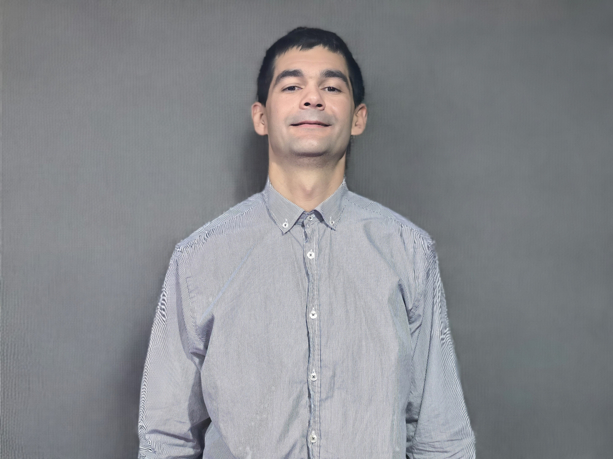

Senior Software Engineer and Technical Architect with over 10 years of professional experience specializing in Java-based backend development, cloud computing, and DevOps. Oracle Certified Professional. Proven track record of designing highly reliable and scalable systems at global tech companies like Revolut and TripAdvisor. Passionate open-source contributor and international public speaker advocating for remote development environments and system reliability.
Financial Crime (FinCrime) Department — high-scale systems safeguarding 70M+ customers.
High-impact SEO team — top-of-market compensation in Croatia.
Independent consultancy delivering high-impact architecture for international clients.
Top-of-market compensation in Croatia, bridging application development and infrastructure operations.
Time struct into a POSIX.1 TZ string, utilizing the ZoneBounds struct to address gaps in the Go standard library regarding DST transitions.Master of Arts in Political Science and Government